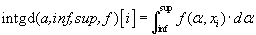

Le choix linéaire convient la plupart du temps. Le choix parabolique est utile pour déterminer convenablement les dérivées aux extrémités. Pour les points extrêmes, le problème est que le point courant n'est pas au centre du lissage. Cela fausse donc le résultat. Si on prend le cas d'une concavité initiale vers le bas, la valeur de la dérivée sera systématiquement affectée d'une erreur par défaut. Si on effectue un lissage parabolique, la valeur obtenue devient correcte aux extrémités pour une parabole, et cela se généralise aux courbes "raisonnables".
valeur en i = somme pour i variant de 2 à i de (f(i-1)+fi)/2)*(x(i-1)-xi). x étant ordonné dans le sens croissant.
Exemple : vous avez enregistré
l'intensité d'une force F en fonction de la position x, vous pouvez
créer Ep, énergie potentielle, en prenant comme variable x et comme
fonction -F. 
Ces deux fonctions doivent apparaître seules dans une définition y=diff(x,t) mais pas y=diff(x,t)*3.
Cette fonction renvoie un paramètre.

. Cette fonction peut apparaître à l'intérieur d'une expression.